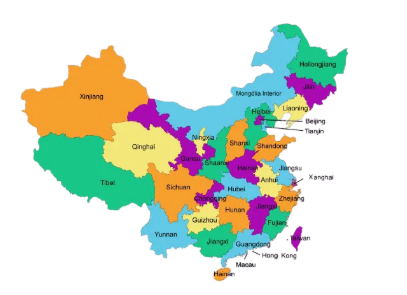
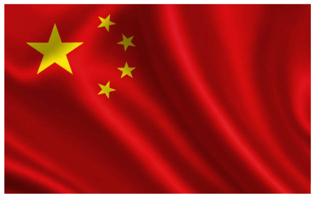

China
A China, oficialmente República Popular da China desde 1949, é uma das civilizações mais antigas do mundo. É também o país mais populoso e a segunda maior potência econômica mundial. Localizada no Leste da Ásia, a China é o terceiro maior país do mundo, a seguir à Rússia e ao Canadá. Faz fronteira com 14 países: Afeganistão, Butão, Cazaquistão, Coreia, Índia, Laos, Mianmar, Mongólia, Nepal, Paquistão, Quirguistão, Rússia, Tadjiquistão e Vietnã. O país é banhado pelo Oceano Pacífico e pelos mares Bohai, Huanghai, Donghai e Nanhai.
O idioma oficial é o Mandarim, também chamado de Chinês Padrão. Ele é falado por mais de 1 bilhão de pessoas, sendo a língua mais falada do planeta. A China é o país mais populoso do mundo, com cerca de 1,4 bilhão de habitantes. Sua população é majoritariamente da etnia Han, mas existem 56 grupos étnicos reconhecidos oficialmente. A civilização chinesa tem mais de 4 mil anos de história contínua, marcada por grandes invenções como o papel, a pólvora e a bússola. Após séculos de impérios, o país passou por guerras e reformas até se tornar uma potência moderna.
